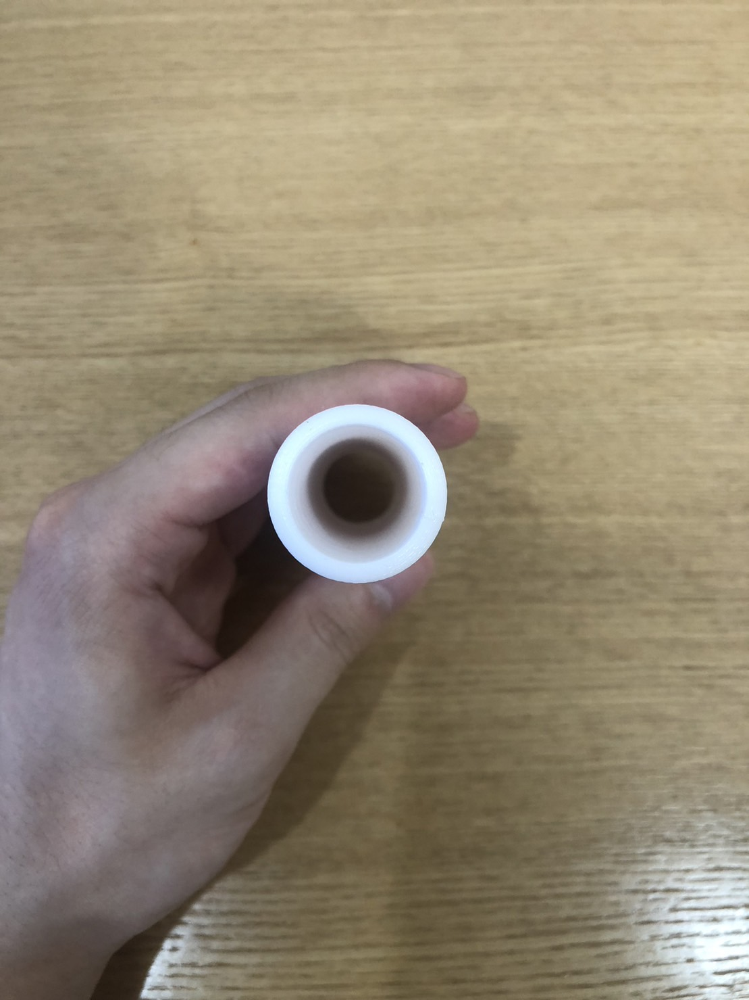

Subject活動内容

| Fusion 360 設計 | STLファイル |
|---|---|
| プリント結果 |


|
| 結果からの考察 | 筒 サイズ違いを3パターン出力 小サイズ：無印のとほぼ同じサイズ 良い点 携帯はしやすそう コンパクト 悪い点 袋の数に限りがある 袋の出し入れが大変そう 中サイズ 良い点 サイズ感がいい携帯しやすそう 袋も複数枚入りそう 悪い点 少し大きくなる 許容？？？ 大サイズ 良い点 袋の出し入れしやすそう 袋がたくさん入りそう 悪い点 大きすぎる 重たい コンパクトではない 携帯しようとは思わない 小さなカバンには入らない 袋を巻く部分 良い点 コンパクト 携帯しやすそう 悪い点 弱すぎる 壊れる 折れる 一枚も袋を袋をまくことができない |
| 考察から次は | 筒は サイズを中のサイズにする。（仮） 巻き取り部分は 中の筒に合わせて長くする。 巻き取りの管を太くする 巻き取り幅（袋を通すところ）を大きくする 引っかかりをつくる |